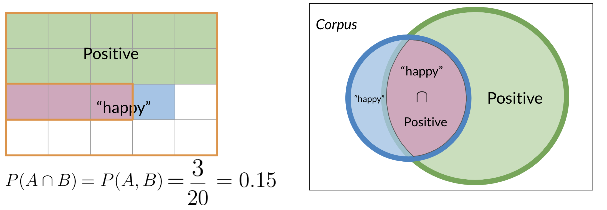
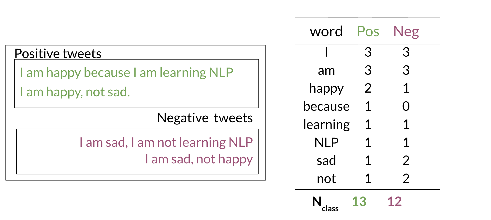
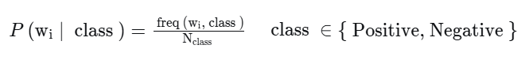
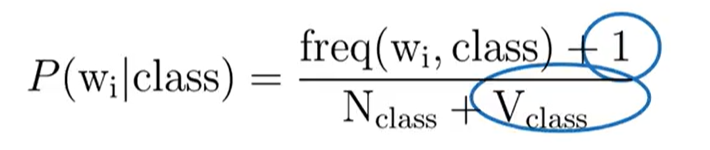
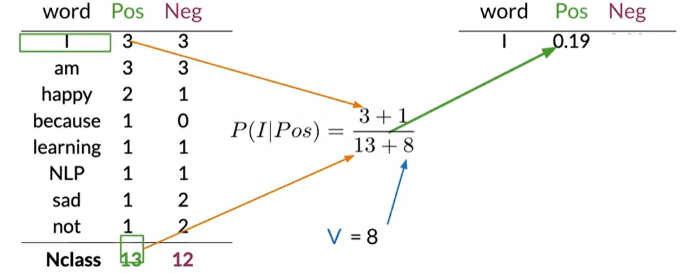
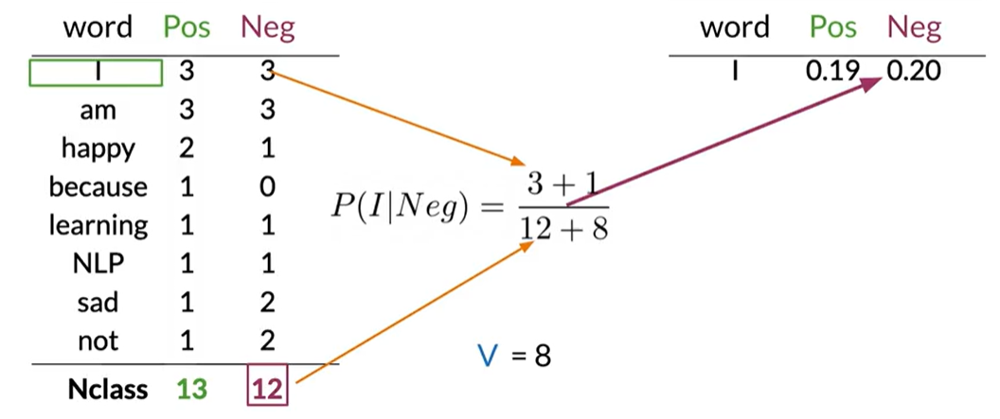
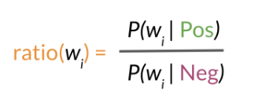
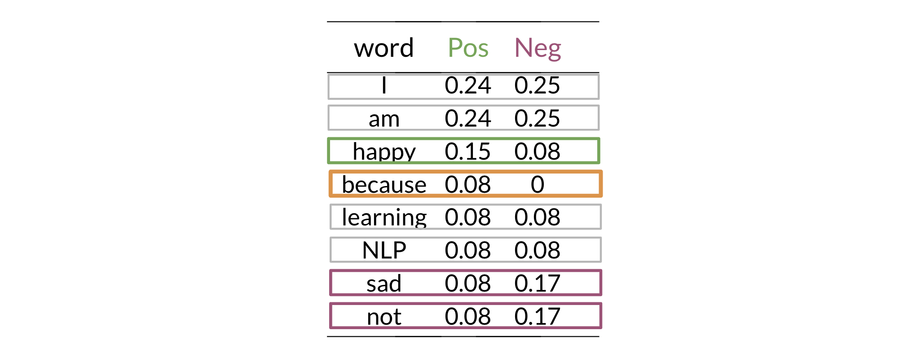
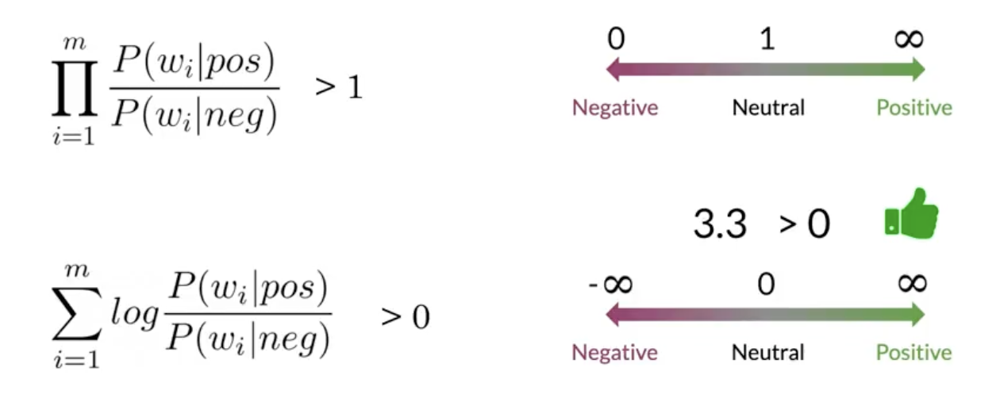

My goal in this section is to build a sentiment analysis model using a new classification method: Naive Bayes. This technique is particularly useful as it is simple to implement, fast to train, and provides a strong baseline for text classification tasks.
Unlike logistic regression, which finds a separating line between classes, Naive Bayes works by calculating the probability of a tweet belonging to the positive or negative class and then selecting the class with the highest probability.
At the heart of this method is Bayes' Rule, which updates our belief based on new evidence. It relies on conditional probabilities.
A conditional probability answers the question: "What is the probability of event A happening, given that event B has already happened?" This is written as $P(A\mid B)$.
For example, what is the probability that a tweet is positive, given that it contains the word "happy"? We can visualize this by looking at the intersection of events. The conditional probability reduces our sample space from all tweets to only the tweets containing the word "happy".
The formula for conditional probability is:
$$ P(A\mid B) = \frac{P(A \cap B)}{P(B)} $$Bayes' Rule is derived from the conditional probability formula and allows us to "flip" the condition:
$$ P(A\mid B) = \frac{P(B\mid A)\,P(A)}{P(B)} $$This is a powerful tool because it's often easier to calculate $P(B\mid A)$ than $P(A\mid B)$.
To classify a tweet, we want to determine if it's more likely to be positive or negative. We can frame this using Bayes' Rule. We want to compare:
Let's focus on the positive case. According to Bayes' Rule:
$$ P(\text{pos} \mid \text{tweet}) = \frac{P(\text{tweet} \mid \text{pos})\, P(\text{pos})}{P(\text{tweet})} $$When comparing the positive and negative classes for the same tweet, the denominator $P(\text{tweet})$ is the same for both. Therefore, we can ignore it and just compare the numerators:
$$ \text{classification} \propto P(\text{tweet} \mid \text{class})\, P(\text{class}) $$Calculating the likelihood $P(\text{tweet} \mid \text{class})$ is difficult. A tweet is a sequence of words, like $(w_1, w_2, ..., w_n)$. The probability of this exact sequence is tiny and hard to model.
Here is where the "naive" assumption comes in:
We assume that every word in the tweet is conditionally independent of every other word, given the class (positive or negative).
This means that for a positive tweet, the presence of the word "happy" does not make the presence of the word "great" any more or less likely. This is not entirely true in language, but it's a simplifying assumption that works surprisingly well in practice.
With this assumption, the likelihood calculation becomes much simpler:
$$ P(\text{tweet} \mid \text{class}) = \prod_{i=1}^{n} P(w_i \mid \text{class}) $$This means we can just multiply the probabilities of each individual word.
Training the model involves calculating two sets of probabilities from the training data: the prior probabilities and the word likelihoods.
The prior probability, $P(\text{class})$, is the frequency of each class in the training set.
The likelihood, $P(w \mid \text{class})$, is the probability of a word appearing given a class. The most direct way to calculate this is by using word frequencies, similar to the method in logistic regression.
First, we create a frequency dictionary for all words in our vocabulary, counting their occurrences in positive and negative tweets.
A major issue arises when a word in a tweet we want to classify was not present in the training data for a given class. For example, if the word "elated" never appeared in a negative tweet in our training set, its frequency freq("elated", neg) would be 0.
When we calculate the conditional probability, this leads to a zero value:
When we calculate the overall score for the tweet by multiplying the probabilities of all its words, this single zero will cause the entire score for that class to become zero. This incorrectly biases our classification and loses valuable information from other words in the tweet.
To prevent this, we use Laplacian smoothing. The core idea is to add a small smoothing parameter $\alpha$ (usually 1) to the frequency count of each word. This is why it's also called "add-one smoothing" when $\alpha=1$.
However, just adding to the numerator would mean the probabilities for a class no longer sum to 1. To re-normalize, we must also adjust the denominator. We add $\alpha \times V$, where $V$ is the total number of unique words in our entire vocabulary.
The updated formula for the likelihood becomes:
Where:
freq(w_i, class) is the frequency of word w_i in the given class.N_class is the total count of all words in that class.V is the total number of unique words in the vocabulary.This ensures that no word will have a zero probability, providing a more robust model.
Let's apply this to our dataset. First, we calculate the smoothed probabilities for each word in the positive class:
Next, we do the same for the negative class:
To classify a new, unseen tweet, we perform the following steps:
Before building the full classification formula, it's useful to look at the sentiment contribution of individual words. We can do this by calculating the ratio of a word's probability in the positive class versus the negative class.
This ratio gives us a single number that represents the sentiment intensity of a word:
While the ratio is great for interpreting individual words, for classifying a full tweet we use log probabilities to avoid underflow. The classification rule is:
$$ \log P(\text{pos}) + \sum_{i=1}^{n} \log P(w_i \mid \text{pos})\;\;\mathop{\gtrless}_{\text{neg}}^{\text{pos}}\;\; \log P(\text{neg}) + \sum_{i=1}^{n} \log P(w_i \mid \text{neg}) $$The term $\log P(w_i \mid \text{class})$ is a word's log-likelihood. The final score for a class is the sum of the log prior and all word log-likelihoods.
By comparing the final scores, we determine the most probable sentiment.
We define the word contribution as the log-ratio:
$$ \lambda(w) = \log \frac{P(w \mid pos)}{P(w \mid neg)} = \log P(w \mid pos) - \log P(w \mid neg) $$Tweet score is the sum over words:
$$ \Lambda(\text{tweet}) = \sum_{i=1}^n \lambda(w_i) $$Decision rule using the tweet score:
With Naive Bayes + logs, the threshold is 0. We measure sentiment by the log-likelihood ratio (sum of word lambdas). A positive total favors positive; a negative total favors negative.
Just like with logistic regression, we need to evaluate our model's performance on a test set. The most common metric is accuracy.
$$ \text{Accuracy} = \frac{\text{Number of correctly classified tweets}}{\text{Total number of tweets}} $$We can also use a confusion matrix to get a more detailed view of our model's performance, showing us where the model is getting confused (e.g., misclassifying negative tweets as positive).